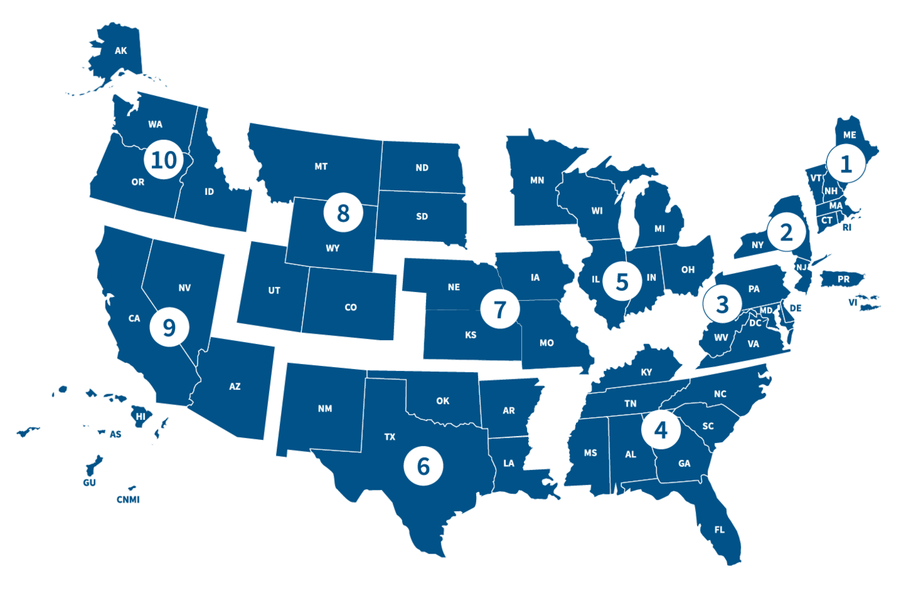

Prediction:
Summary:
Prediction:
Summary:
Methodology
we downloaded the Disaster Declarations Summaries, the National Risk Index, and the National Inventory of Dams datasets. We used the Python library, pandas, to work with this data and apply the various techniques mentioned previously. After filtering, cleaning up, and manipulating the data, we compiled it into a data frame and CSV file so that it could be utilized later on when training our model.
Before building our model, we first wanted to perform exploratory data analysis. This allowed us to better understand the data we were working with so that we could better utilize it. We asked ourselves various questions primarily related to the relationships between variables. We also wanted to visualize how correlated certain variables were with each other so that we knew what factors were best to include in our model and which ones could be omitted. We created plots for example that displayed the number of hurricanes vs. the risk score of a region. These plots gave us greater insight into whether or not certain relationships like this one were linear as well as how much of the data could be explained by certain predictors. After performing EDA, we found that many of these predictors had loose linear relationships that we believed could form reliable estimations when combining multiple of these predictors.
We tested a multiple linear regression model with various factors, however, it did not perform well at predicting the expected loss per person. We discovered that the true relationship between these predictors in combination with each other and the expected loss per person is likely not linear which was causing the model to struggle in prediction. Another difficulty of this model is that it is hard to capture complex patterns that likely occur in the data as the model has a high bias and not enough complexity. The assumptions of the linear model: linearity, homoskedasticity, and normality did not hold in this dataset, making a linear model not the best choice. Instead, we decided on a neural network which is a much more flexible model and allows us to capture these complex patterns in the dataset. For the architecture of the model, we decided on a five-layer neural network with one input layer, three hidden layers, and an output layer. The input layer takes in 9 features as well as a learned bias term and transforms this into a fully connected 16-neuron hidden layer. This hidden layer is followed by two additional 16-neuron hidden layers with bias terms. We increase the neuron count here to 16 plus the bias term inside the hidden layers before dropping off to one neuron for the output. We utilized reLU activation in between each layer of the model so that we did not run into a vanishing gradient problem. The layer weights are initialized uniformly using the xavier\_uniform function to ensure the training remains stable and to help with convergence. We also start by initializing the bias terms to have a weighting of 0. The criterion we are using is MSE as we are trying to minimize the mean squared error. The model is also using torch.optim.Adam which is a variant of stochastic gradient descent that helps stabilize the updates when converging. We settled on this model after reading about similar models, then fine-tuned the hyperparameters and architecture based on the performance. We adjusted specific hyperparameters such as the weight decay to 0.01 to avoid overfitting and the learning rate to 0.001 for a steady convergence.
The inputs for this neural network were population, building value, population loss, number of disasters (past 20, 10, 5, and 1 years), total number of dams, and average dam hazard score in a county. As mentioned earlier in the paper, a key element of damage from hurricanes is due to dam presence. Whether the dams were overfilled or broken, the catastrophic flooding that takes place during storm events is something we wanted to consider. In addition to the information from the FEMA NRI datasets, we also took information from the national inventory of dams. A county with a higher number of dams has more chance for said dams to fail and then flood the towns. Using these features in combination, we can more accurately predict where damage loss may occur. These predictors were used to predict the estimated total annual loss per person for a county.
We split the counties into a train and test dataset, so that we could properly evaluate the model without training it on our evaluation dataset. After training for 1000 epochs, we fed the model the test data so that it could form predictions for each county. We compiled the true estimated loss per person ordered list from the dataset as well as our predicted ordered list in a separate text file so that they could be compared. Organizing the results in this list allowed us to evaluate the model based on metrics such as the Kendall-Tau distance and precision/accuracy at a number of retrieved documents which are discussed in the results section.
